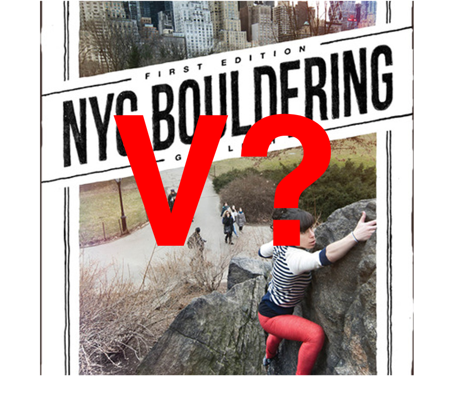

Photo credit: Author/Gaz Leah
See Me After the Session: Fixing NYC's Bouldering Grades
Introduction
S.O.P.s
Rat Rock, Cat Rock
Worthless Boulder
*
Sweating, panting, and sore, I stumbled off my bike and threw my crashpad-climbing bag ensemble
onto the ground. I was fifteen minutes late to Worthless Boulder but my friend—I'll call him S.—was
nowhere in sight. He strolled up by the time I was done warming up—hanging from chest-height
jugs, tiptoeing to tug on some crimps, doing a few easy moves with the pad under me. Despite
the July heat and the masks, he seemed to be in a good mood.
We soon got down to work on our respective projects: mine, a linkup-traverse called Terminator
XX; his, a Manhattan classic called Mean Green. S. had been working this problem for a few
months; its crux is the first move, a big throw from thin, slippery crimps
and poor feet to a sloper-pinch. In my eyes, he had been so close for the last few sessions that I was confused
how he wasn't able to hold it.
By the end of the session—two and a half hours later, with no skin on our fingertips and sunburn
on our necks—I had made a little progress by linking the boulder in three parts, down from four
the last visit; S., on the other hand, was leaving with nothing but increased frustration. His
mood tends to darken as things don't go well; today, the humidity seemed only to worsen things.
Gone was the cheerful smile from the start of the session, replaced with muttering revolving
around his frustration at the boulder's putative grade: "How is this a V4?"
* * *
Grades may be the most hotly debated aspect of climbing—which is a pity, since, because climbing
difficulty is immeasurable (unlike metrics like the speed of a runner) and continuous (unlike
discrete measurements like the number of bowling pins felled), grades tend to be inconsistent and
arbitrary. And there is no
shortage of
commentary
about the contemporary over-emphasis
on grades. Naturally, I have an opinion about this too—but that is not the story of today.
Today is about the boulder grades in Manhattan—the three hundred or so distinct problems
that dot the island. Climbing grades may be immeasurable and continuous, and they may even
be arbitrary. But I believe they should never be inconsistent. Like it or not, people—myself
included—use grades to pick lines to project, to suggest problems to newcomers, and to puff
their egos on Instagram. Consistent grading is a big—the biggest—part of that.
I'm going to end up changing—both upgrading and downgrading—grades that have stood for a long
time, sometimes decades before I was around. This is both sacrilegious and necessary. Holds
have broken, rock has worn and smoothened, and bouldering has proliferated. Please keep two
things in mind: (1) my aim above all is consistency (I in fact downgrade two of my own toughest
sends from V8 to V7), and (2) this is just my opinion, born of two years of pandemic bouldering
that has led to a modicum of fame in the Northeast bouldering community. (Speaking of the Northeast
bouldering community: I have not bouldered enough outside of Manhattan to achieve regional consistency.
I hope to do so in the years to come.)
* * *
Here are a few notes on my methods and organization before continuing:
-
The article is organized by area. Not every problem in an area is listed, to avoid
repetition with available guides. I will only mention here problems which are benchmarks
for their grade or are changed from their "standard" grading.
-
I comment on the grades of boulders which I have not climbed; this is an act so
blasphemous as to be the subject of
Jakob Schubert's 2022 April Fool's Joke. I will (but have not yet had to) downgrade boulders I have not
sent if two conditions are met:
- (1) I have projected the line for at least ten sessions
- (2) I have climbed a significant section of the boulder, e.g., a stand-start.
-
It's worth noting that if I were downgrading maliciously, downgrading lines would not help
my standing much: it would mean that instead of being unable to climb something at grade X,
I was unable to climb something at grade X-n, which would naturally be more "embarrassing"
to whatever degree.
I will also upgrade boulders I have not climbed, with all such instances explicitly mentioned below.
-
The only non-integer grades I use are X/Y, e.g., V4/5. +/- complicate the grading—Is V4+ harder than V4/5?
Easier? Is it the hardest V4 in the world without being a V5?—and the last point in the previous parenthetical
shows that +/- is more often used to preserve an outmoded number than to inform the climber.
-
As an arbitrary system demands some anchor to reality, some axioms which are accepted so as to situate all
that swims around it. My anchors, decided mostly by the fame and legacy of the line, are as follows:
- Voodoo Bullshit (Worthless Boulder): V2
- Polish Traverse (Rat Rock): V5
- Family Values (Worthless Boulder): V6
- Sweat [of the Rapist] (Worthless Boulder): V10
-
I reference several guides and climbers who have explored and documented Manhattan bouldering before me; their
work is hugely important, and I owe them a great debt. They are:
- Nick Falacci, writer of beta-boy.com
- Gaz Leah, writer of NYC Bouldering
- Peter Li, owner of the eponymous YouTube channel
- Kevin Valenzuela, owner of the YouTube channel Sticky Paw
* * *
Rat Rock, Cat Rock
Rat and Cat Rocks are the oldest modern bouldering areas in Manhattan. Falacci's first-person
history on beta-boy.com is an invaluable
resource on the first days of bouldering in the best urban climbing scene in the country. These
grades were long sandbagged (though perhaps not as sandbagged as the aggressive new wave that
took over Worthless Boulder), but they have by and large stood the test of time.
V0
V0/1
V1
- Rat Rock Traverse.
Long considered the hardest V0 in the city, the problem has long been used by
seasoned outdoor climbers to humble strong gym climbers. I am upgrading here
to abolish the use of this problem in the manner described. Its notoriety
arises from its exceeding difficulty only in areas which gym climbers are
untrained (slippery/invisible feet, subtle ripples in rock in lieu of
obvious hands). In all other matters, it is quite straightforward.
V2
- Tweaky Shit Stand.
This one-move V2 used to be thought a V3, equivalent to its sit-start sibling.
Though I have no inherent problems with sit- and stand-starts having the same
grade, this move simply does not warrant V3.
V2/3
- Tweaky Shit.
- Nipple Twist.
An eliminate of Layback, this problem was originally graded at V4 but is even
easier than Terrordome.
V4
- Rat Patrol.
A classic, and the only long-established line that allows all holds on the
featured East Face.
V4/5
- Testpiece.
Long the hardest problem at Rat Rock, Testpiece in its current incarnation—all
face holds on, left rail off for hands and feet, exiting between the rail and
the flake—challenges both the fingers and the minds of strong climbers.
- Toothless.
A worthwhile eliminate, using all holds except the prominent tooth
feature and finishing as Rat Patrol. Described as such for the first time by
Dan Katz.
[Sit starts to Rat Patrol, Testpiece, and Toothless each add one V-point.]
V5
- Polish Traverse.
- Koma's Roof Liter
(as in "lighter") and Brooklyn. Both
problems start with the left hand in the low undercling and the right hand on
the sloping rail; the former climbs directly up, as Koma's Roof, while the
latter reverses Polish Traverse. In any case, both are significantly easier
than the V6 trifecta given below.
- Scratching Post/Left of the Arete (LOTA).
Graded at V3 before crucial holds broke, V5 is far more appropriate for this stiff,
height-dependent line.
V6
- Smack the Dragon, Bruce Lee, and
The Juice. These three different climbs form the
trifecta of one-move wonders on the West Face. All beta- and finger-strength dependent,
they stand as some of the toughest, most frustrating problems in Manhattan.
V7
- Koma's Roof Lite. Originally called
Koma's Roof Stand, which made no sense, given that one began sitting. This starts with the
right hand on a bad sloper below the sloping rail. Called a V8 by Falacci, I (regretfully)
agree with consensus arriving at V7.
- Speedy Gonzalez.
Leah only writes to avoid the golf-ball and grades it at V6; Falacci writes to avoid both
the golf-ball and the sloper-pinch below and to the right of the golf-ball and grades it
at V7. The latter both makes more sense as a line and proposes a more significant
challenge; I go with the latter here. (I happen to have made the first publicly
available filmed
ascent of this problem.)
V8
- The Yuki Problem.
- Ashima Mandala.
V9/10
- Elias. This extremely
challenging problem at Cat Rock was graded at V9 when Scratching Post was a
V3. This modest suggested upgrade, based on my experience of Scratching Post,
may yet go further.
V10
* * *
Worthless Boulder
Worthless is my home crag—a twenty-minute walk from school; I would go two or three
times a week in good weather. I've climbed everything I can on the boulder, and
have projected many of the harder problems (with mixed success). Worthless has
some of the most inconsistent grading, both compared to other lines on the
boulder and to the city. This hopefully fixes that.
V0
V1
V2
V3
- Terrordome.
Falacci calls this V4, which, given that his guide also calls Mean Green V4,
is untenable. Any climber above V3 will be able to attest to this.
V4
- A.D.H.D.
This was called a V5 for the longest time as well, which given how large Polish
Traverse looms in Manhattan bouldering, is shocking. It is significantly easier
than Mean Green.
V5
- Mean Green.
This upgrade is a long time coming. From the extremely slippery starting hands
and feet to the insecure sloper and sharp crimps, it is a challenging line that
will be sure to fend off strong gym and outdoor climbers alike.
- Terminator X. Falacci
calls this problem V6, though he himself acknowledges it may be easier than its
reverse sibling, Family Values. I have executed upon his suggested downgrade.
V5/6
- Boomboxer. An apparently
new line (neither Leah nor Falacci reference it), it was called a V6, which,
considering Family Values right alongside it, makes little sense.
- A.D.D. This problem's
first move is its entire difficulty, and this first move is significantly easier
than any other one-move wonder of its former grade in the city.
V6
V7
- A.D.D. Boxer.
- Terminator XX.
- A.D.D. Low. Executing
the first two moves took close to ten sessions, after sending both other V7s
on this boulder. This problem was not graded by Valenzuela but stands as a
worthwhile challenge and therefore should be graded.
V8
V9
- Jewish Values. An apparent
addition by Li, this problem is the easiest of the problems involving the crux of Sweat.
alling on the section past the start holds of Mean Green can only be called a punt.
V10
- Sweat [of the Rapist].
- Privilege.
This problem
was graded at V9 by both Falacci and Leah, but this is incongruous: many recent crushers
have ticked Sweat, but only Li and Valenzuela Privilege. The former has wryly described it
as "not soft," and Valenzuela has affirmed the grade.
Projects
- Terminator XXX.
Terminator X
starts as for The Arete, traverses left, and tops out as Voodoo Bullshit; Terminator XX does
the same until Boomboxer. The logical extension of this is to downclimb all the way into Rewind,
linking a V7 into a V8.
* * *
Miscellaneous Boulders
Bionic Shoulder: V7. Though it was my first outdoor V8 at the time,
I must ruefully agree with Li's grade of V7.
Tipping Point: V7. Though new guidebooks and climbers seem to tug this
line's grade down to V6, it feels equally difficult as, if not on occasion harder, than its sibling, Story of a
Hurricane.
[Written 2022]